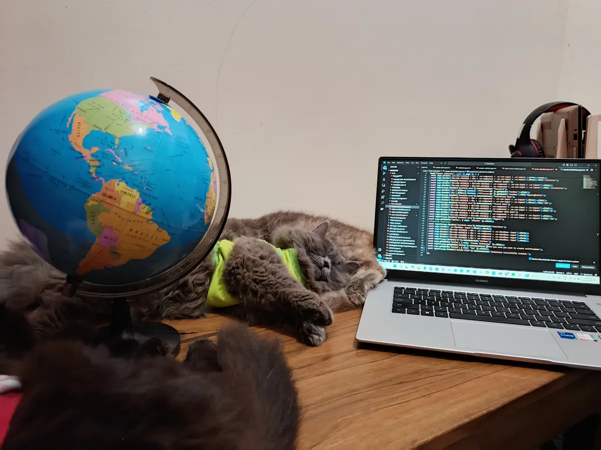
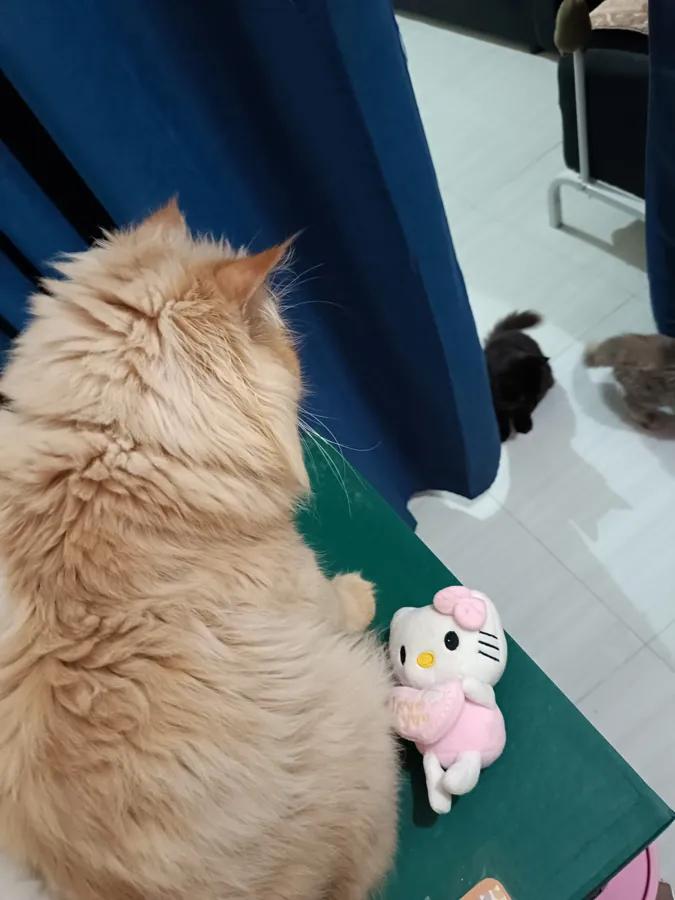

Shift left
I start testing early in development, when defects are cheapest to fix.
Senior QA Specialist · available for hire
Hi, I’m Aileen “Yen” Fusana. For 7+ years I’ve tested web and mobile products for local and international teams, turning messy edge cases into calm, confident releases.
$ npx playwright test
01 — About me
I build test strategies, find the issues that matter, and work closely with developers so each release is better than the last.
I’ve worked with local and international teams, both hybrid and fully remote, at tech startups and established companies alike. That range gives me a wide view of QA: I’ve seen what works on small teams and what holds up at scale.
I enjoy turning complex problems into polished, user-friendly products. When I’m not testing, I’m usually exploring new tools or sharing QA best practices with my team.
A track record of catching subtle bugs through meticulous, methodical testing.
Comfortable with Agile and DevOps workflows and a wide range of testing methods.
I map how a change ripples through a complex system before it reaches production.
I’ve repeatedly improved testing processes and the quality of what ships.
I keep up with industry trends and new technologies in testing.
I write bug reports developers can act on right away, with clear steps and no guesswork.
02 — Expertise
I test manually and with automation, focusing on strategy, careful execution and steady improvement. Pick an area to see how I approach it.
I start from the requirements, user personas and business goals, so testing follows what the project needs to achieve.
I cover every device, OS version and network condition with an adaptive, real-device-first approach.
Manual testing is how I put myself in the user’s place, checking that a product works and is pleasant to use.
I build robust, maintainable and scalable test suites that check every commit as part of CI/CD.
03 — Approach
The right QA strategy depends on the project, but mine always combines planning, execution, communication and continuous improvement, built on the SDLC.
I start testing early in development, when defects are cheapest to fix.
I test the way real users will use the product, so it’s usable and satisfying, not just technically correct.
Agile and DevOps habits keep testing continuous, from the first commit to the last release.
04 — Experience
A provider of internet services, smart homes and units, digital signage, security cameras, billing and control platforms, access control and community Wi-Fi.
A software company specializing in full-spectrum online logistics software.
A Japan-based online learning center that also provides paralegal solutions and other professional services.
05 — Off duty
When I’m not testing software, I’m caring for my four cats, cooking for my kid, or settling in for a family movie.


Logged by me. Mostly marked “won’t fix” by the cats.
CAT-001CriticalEvery cat in the house acts as an alarm. All of them default to 3 a.m.
CAT-002HighBathroom breaks have turned into group meetings. Expected: some privacy. Actual: four attendees.
CAT-003MediumThe human has nowhere to sit. Seat-allocation logic favors whoever is furriest.
CAT-004LowThe cats’ daily drama provides more than enough entertainment. Consider canceling.
06 — Contact
Need help testing a web or mobile app? I’d love to hear what you’re building.